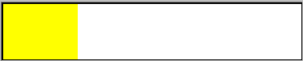

|
class StarIndicator : public ProgressIndicator
Derived from ProgressIndicator. Part of Controls4U library.
StarIndicator is a kind of ProgressIndicator allowing to show the popularity of something, as we can see on some merchant web sites. It indicates the popularity with stars, and shows with text the exact rate (with one decimal) of the popularity and the number of votes.
Colors are used to show the confidence we can give to the grade, according to the number of votes :
Light blue if undefined,
Red if less than the value defined in the variable m_nVotesLow,
Yellow if more than the value defined in the variable m_nVotesLow and less than the value defined in the variable m_nVotesHigh,
Light Green if more than the value defined in the variable m_nVotesHigh
As seen in layout designer :

As seen in program :
StarIndicator()
Initializes StarIndicator with the default behavior :
The text will be displayed when the mouse goes over the control,
The text will be black,
The total will be shown,
The number of votes will be shown,
The number of votes is 0,
The minimal number of votes is 5 (for yellow stars),
The optimal number of votes is 50 (for green stars).
virtual StarIndicator& AlwaysShowValue(bool b)
If b is true, the text will always appear. If not, it will appear only when the mouse is over the control.
|
b |
Indicates if the text must be always shown or not. |
virtual void Layout()
This method is invoked when layout of StarIndicator has to be refreshed. This is usually either before window is displayed or when the StarIndicator is resized.
virtual void MouseEnter(Point p, dword keyflags)
This method is called by default implementation of MouseEvent when mouse cursor enters the view area of StarIndicator.
|
p |
Point of mouse cursor in view coordinates. |
|
keyflags |
Combination of key flags for Shift, Ctrl and Alt keys. |
virtual void MouseLeave()
This method is called by default implementation of MouseEvent when mouse cursor leaves view area of StarIndicator.
virtual void MouseMove(Point p, dword keyflags)
This method is called by default implementation of MouseEvent when mouse cursor hovers above view area of StarIndicator.
|
p |
Position of mouse cursor in view coordinates. |
|
keyflags |
Combination of key flags for Shift, Ctrl and Alt keys. |
virtual void Paint(Draw& draw)
This method is called when StarIndicator's view area is about to be repainted.
|
draw |
Target of draw operations. |
virtual void Set(double n)
Sets the new rate.
virtual void Set(int n)
Sets the new rate as integer value.
virtual void Set(int n, int tot)
Sets the new rate as integer value and the maximum possible rate.
virtual StarIndicator& SetFontColor(Color c)
Sets the color of the text.
virtual StarIndicator& SetVotes(int n)
Sets the number of votes.
virtual StarIndicator& SetVotesHigh(int n)
Sets the minimal number of votes giving full confidence to the rate. The stars will be colored in light green if the number of votes is more than n.
|
n |
Number of votes for full confidence. |
virtual StarIndicator& SetVotesLow(int n)
Sets the minimal number of votes giving half confidence to the rate. The stars will be colored in yellow if the number of votes is more than n, in red if lower than n.
|
n |
Number of votes for half confidence. |
virtual StarIndicator& ShowPercent(bool b)
Changes the way the text will display the rate : in percents if b is true or in value if false. It will be displayed according to the choice set by the call of AlwaysShowValue(bool b).
|
b |
Indicates if the text will display the rate in percents or in value. |
virtual StarIndicator& ShowTotal(bool b)
The maximum rate value can be displayed or not, according to b. It will be displayed according to the choice set by the call of AlwaysShowValue(bool b).
|
b |
If true, the total (maximum rate value) will be displayed. |
virtual StarIndicator& ShowVotes(bool b)
The number of votes can be displayed or not, according to b. It will be displayed according to the choice set by the call of AlwaysShowValue(bool b).
|
b |
If true, the number of votes will be displayed. |
|
{kind=link}
{kind=link}
{kind=link}